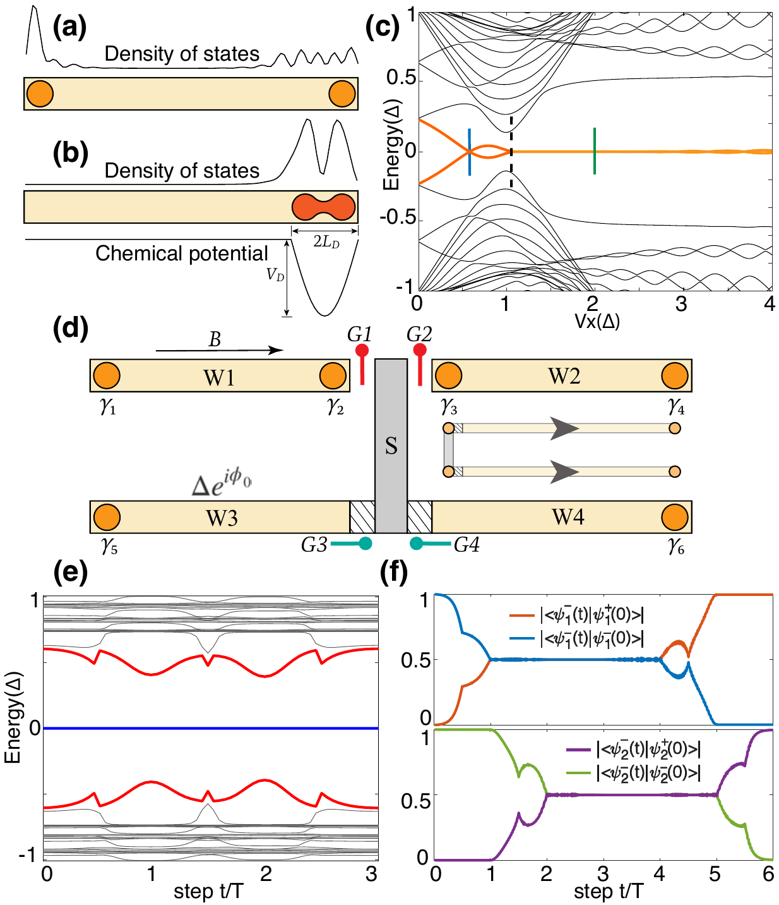
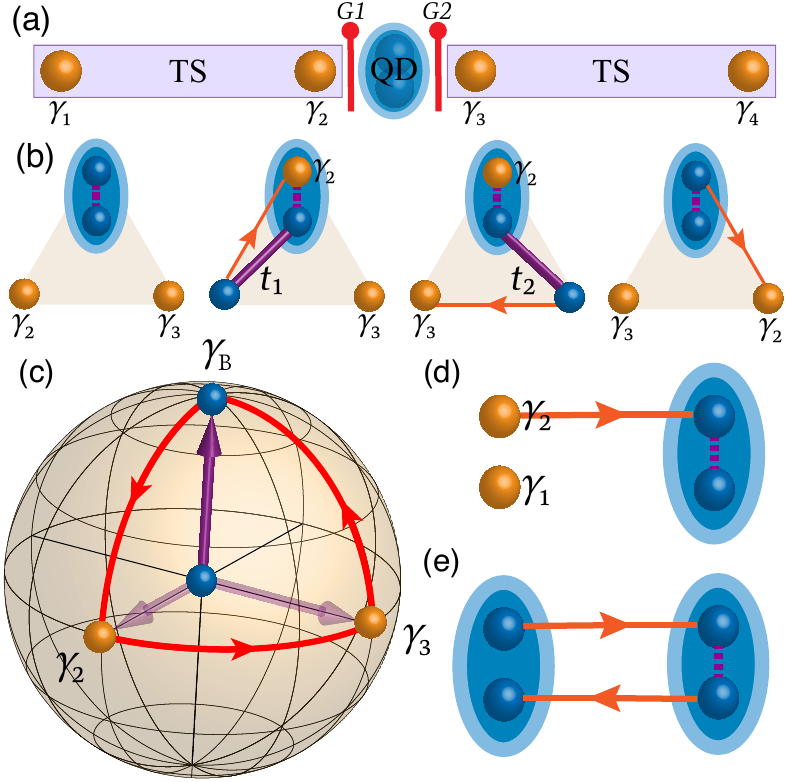

Quantum computing
Braiding Majorana Zero Modes for Fault-Tolerant Topological Qubits
Majorana zero modes are the building blocks of intrinsically fault-tolerant qubits, if they can be braided reliably in imperfect real devices. I showed that non-Abelian braiding survives the most common experimental contaminant, a trivial Andreev bound state, and co-developed a minimal quantum-dot setup that braids with a direct electrical readout.

A Majorana wire vs. a trivial Andreev bound state (a–c), the modified-tetron braiding device (d), and braiding that survives the contaminant (e, f).

Two topological-superconductor wires coupled through a quantum dot (a), the braiding sequence (b), and the exchange as a closed Berry-phase loop (c).
Quantum computers are fragile: local noise corrupts the delicate states they compute with, and most architectures fight this with heavy layers of error correction. Topological quantum computing takes a different route: it stores information non-locally, so protection is built into the physics rather than patched on afterward.
The carrier is the Majorana zero mode: a zero-energy excitation that appears in pairs at the ends of a topological superconductor (a semiconductor nanowire with strong spin–orbit coupling, proximity-induced superconductivity, and a Zeeman field). Each is "half" of an electron; a widely separated pair shares one fermion state, so a single qubit lives in their joint parity, invisible to any local probe. Computation is done by braiding: exchanging Majoranas applies gates that depend only on the topology of the exchange and don't commute (they are non-Abelian), which is what makes them intrinsically robust.
The hard part is physics, not wiring: you must braid robustly and tell a true Majorana apart from mundane look-alikes such as trivial Andreev bound states, which reproduce nearly the same experimental signatures. I worked on both problems.
Non-Abelian statistics in the presence of an Andreev bound state (first author, Phys. Rev. B 105, 054507; the first figure). I studied braiding in a modified tetron, four gate-controlled nanowires (panel d), with the most common experimental contaminant present: a trivial Andreev bound state, modeled as a pair of weakly coupled Majoranas (panel b). The contaminant hybridizes with the braided modes and injects a spurious, braiding-time-dependent phase that would spoil the statistics. I showed that a geometric-phase (spin-echo-like) cancellation removes it and recovers braiding-time-independent non-Abelian statistics even with the contaminant present (panels e, f), and that the same gate-tunable coupling gives controllable single-qubit rotations.
A minimal setup for non-Abelian braiding (co-developed, second author, Sci. China Phys. Mech. Astron. 64, 117811; the second figure). This proposes the smallest device that can braid: two topological-superconductor nanowires coupled through a single quantum dot (panel a). Instead of physically dragging Majoranas around a two-dimensional network, braiding is done by adiabatically looping the dot's couplings: a geometric (Berry-phase) braid, drawn as a closed loop on a parameter-space sphere (panel c). The operation flips the local fermion parity, which converts into a measurable electric current: an electrical read-out of non-Abelian statistics.
This was my earliest research area: undergraduate work (one first-author paper, one co-authored) that gave me a hands-on engagement with the core problems of topological quantum computing: realizing Majorana modes, braiding them robustly, and separating true Majoranas from trivial look-alikes.